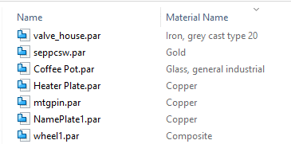

Search based on properties
In Windows Explorer, you can use mnemonics to search for documents based on registered custom properties. For example, you can search for a part that has a certain type of material and is released, or search for a part based on its document number. To learn more about registered custom properties, see Working with registered custom properties.
Out of the box, Solid Edge stores several mnemonics in \Program Files\Siemens\Solid Edge 2019\Program\ResDLLs\<language>\seprops.propdesc. When you create registered custom properties, Solid Edge automatically adds to this file the mnemonics for the new properties.
Some properties have more than one mnemonic. For example, the document property has two mnemonics: SEDocumentNumber and SEDocNum.
The mnemonic name does not vary with language or locale.
The following are the mnemonics Solid Edge provides out of the box:
|
Property name |
Mnemonic |
|---|---|
|
Document number |
SEDocumentNumber SEDocNum |
|
Revision number |
SERevision SERev |
|
Project name |
SEProject |
|
Saving application |
SESavingApp |
|
SE status |
SEStatus |
|
SE status user |
SEStatusUser |
|
SE status user display |
SEStatusUserDisplay |
|
SE status date |
SEStatusDate |
|
Material name |
SEMaterial |
|
Hardware part |
SEHardware |
|
SE document ID |
UniqueStamp |
|
SE OLE links |
SELinks |
|
SE interpart links |
SEInterpart |
|
SE origination date |
SEOriginDate |
|
SE revision root |
SERevRoot |
|
SE revised from |
SERevFrom |
|
SE version |
SESavedVer |
To search using mnemonics, in a Windows Explorer search box, enter the mnemonic, followed by a colon (:), and the search criteria. If the mnemonic is valid, as soon as you enter the colon, the mnemonic turns blue . To search for a part that is made of steel, for example, enter SEMaterial:steel in the search box. You can also search for more than one criteria at a time. For example, to search for a part that is made of steel and also includes a number 1 in the document number, enter SEMaterial:steel + SEDocNum:1*.
If properties are registered correctly on the Solid Edge server and on the client, but mnemonics do not turn blue and search results are incorrect, reboot the client to clear up this issue.
If you want a file property to be visible every time you work in Windows Explorer, right-click any column, choose More, and then choose the property of interest. For example, if material is often of interest to you, you could display the Material Name column.
